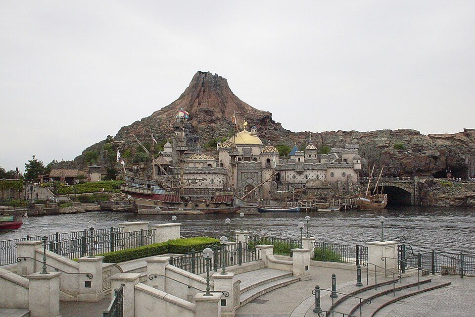
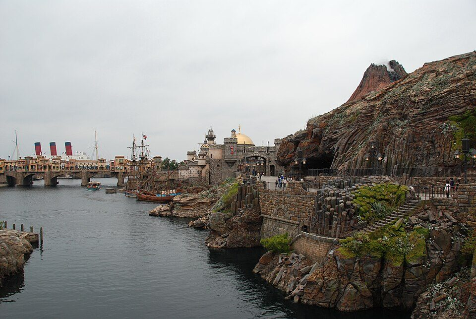
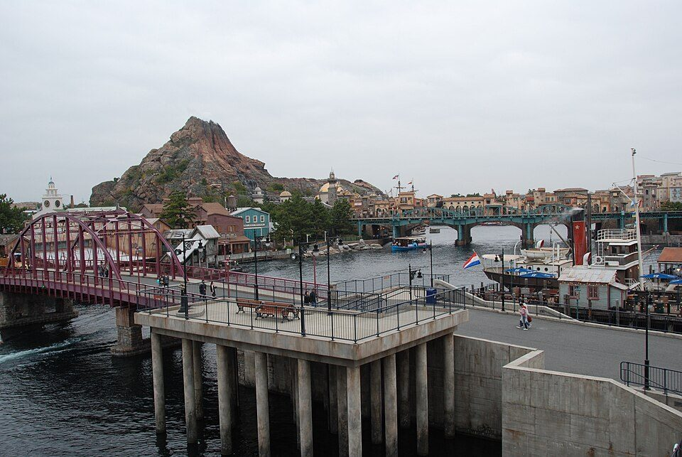
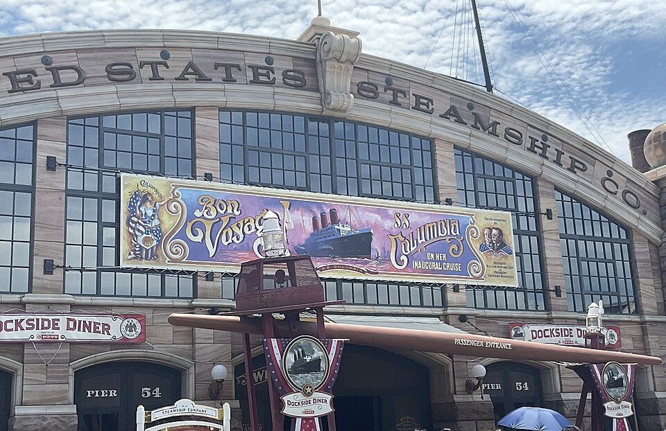
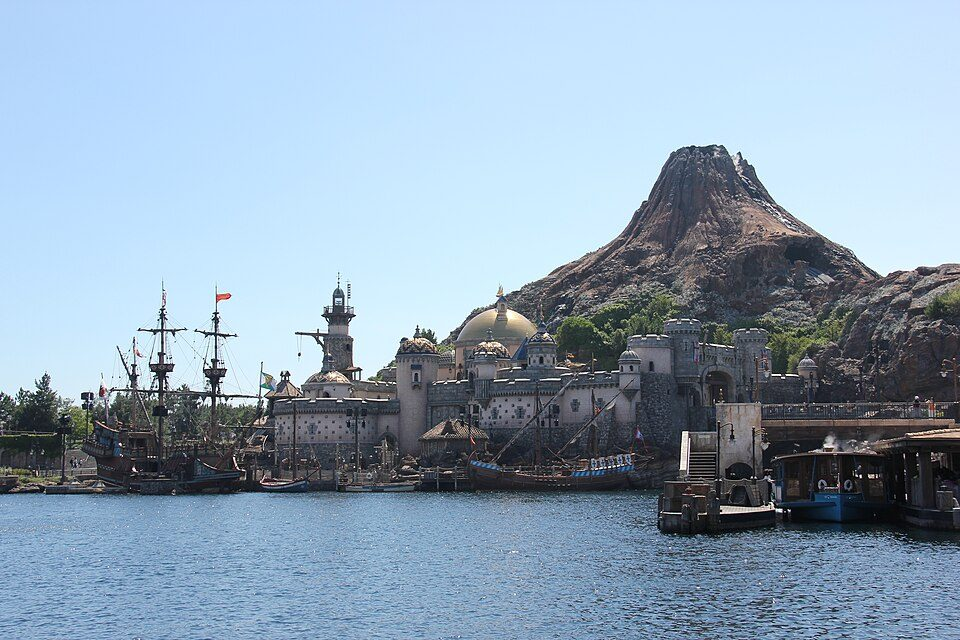
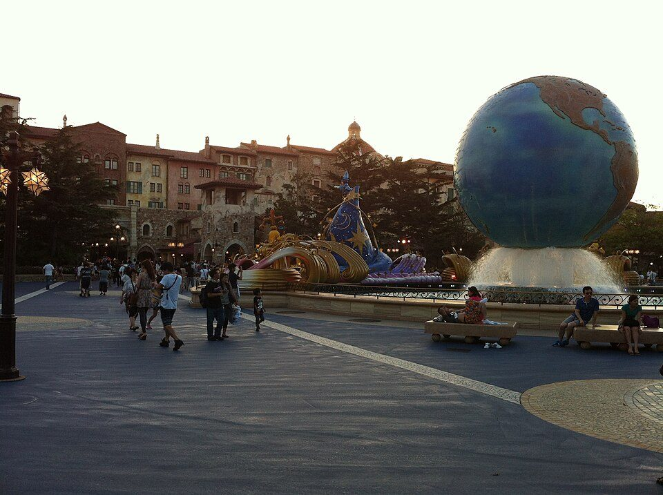

- Dinner and queues: restaurant priority seating opens at 10:00 Japan time (09:00 Malaysia and Shanghai) one month ahead: Tue 24 Nov for 24 Dec at DisneySea (dinner for 7).
- Optional paid queue-skip (Premier Access, bought in the app once inside, per adult per ride, twins free): Frozen Journey JPY 2,500 (≈ SGD 20.25 · ≈ MYR 64.25) and Rapunzel's Lantern Festival JPY 2,000 (≈ SGD 16.20 · ≈ MYR 51.40), which can sell out.
- Prices and rules were read on the official site on 15 and 16 Nov 2026 and can change.
Tokyo DisneySea

Tokyo DisneySeaThu 24 Dec · Christmas Eve. Dinner seating needs follow-up.Details
Tickets bought (23 Nov). Dinner priority seating: the 24 Nov opening has elapsed; reservation outcome is not recorded. Check availability and follow up.
Decided on 16 Nov 2026: Tokyo DisneySea on Thu 24 Dec (Christmas Eve) is the only Disney day. Tokyo Disneyland on Sun 27 Dec is dropped, and Sun 27 Dec is left empty.
The twins are free (age 3 and under).
- Thu 24 Dec: Tokyo DisneySea
- Sun 27 Dec: left empty
More photos

.jpg){kind=link}

.jpg){kind=link}



.jpg){kind=link}

.jpg){kind=link}
Notes and sources
Saved notes and evidence
Disney: DisneySea on Thu 24 Dec only (decided 16 Nov); Roy buys the tickets on the official site (online only, booths closed); Christmas Eve dinner priority seating opens Tue 24 Nov 10:00 Tokyo time. DisneySea tickets are bought (23 Nov).
Earlier plan (before tickets were bought on 23 Nov)
Tickets were bought by Roy update of 23 Nov 2026. The earlier purchase task and status below are historical.
11
Tokyo DisneySea tickets bought for Thu 24 Dec
To do: buy 5 adult 1-Day Passports for Tokyo DisneySea on Thu 24 Dec: JPY 11,900 (≈ SGD 96.39 · ≈ MYR 305.83) per adult, so JPY 59,500 (≈ SGD 481.95 · ≈ MYR 1,529.15) for all five. The twins are free (age 3 and under on the day). Buy on the official Tokyo Disney Resort website or app before Tue 24 Nov, with a MyDisney account; no refunds, and the date can be changed but not the park.
Not bookedDecided on 16 Nov 2026: Tokyo DisneySea on Thu 24 Dec (Christmas Eve) is the only Disney day. Tokyo Disneyland on Sun 27 Dec is dropped, and Sun 27 Dec is left empty. DisneySea tickets are bought (23 Nov).
Optional outings, dates to be decided (nothing booked)
DisneySea tickets are bought (23 Nov). The twins are free (age 3 and under).